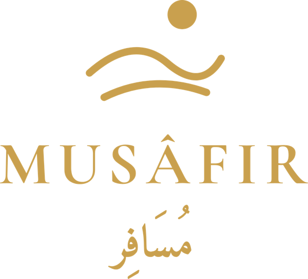
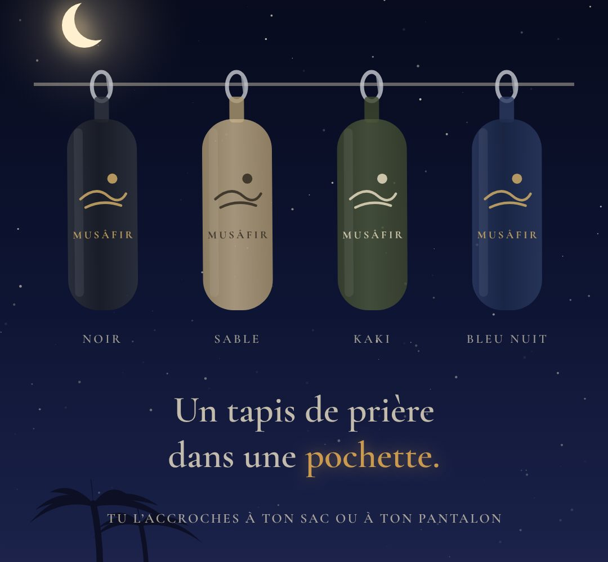

MUSÂFIRLe tapis de prière de voyage qui vous accompagne partout : au travail, en déplacement, au sport.
LANCEMENT PROCHAINEMENT
Illustration · le produit final peut différer
Nos premiers échantillons sont en cours de contrôle qualité. Photos, dimensions et prix seront publiés dès leur validation.
Le paiement par carte passe par Stripe. Nous ne voyons jamais vos données bancaires.
Vous changez d'avis ? Vous disposez de 14 jours après réception pour nous retourner le produit.
Chaque modèle est testé avant d'être proposé. Pas de promesse que nous n'avons pas vérifiée.
Chaque e-mail reçoit une réponse personnelle, pas un robot.
Musâfir (مُسَافِر) signifie « le voyageur ». Une marque pensée pour ceux qui travaillent, voyagent ou se déplacent, là où il n'y a ni mosquée ni tapis.
Je m'appelle Mohamed. Comme beaucoup, je travaille, je me déplace, et trop souvent l'heure de la prière arrive là où il n'y a ni mosquée ni tapis.
J'ai créé Musâfir pour que chacun puisse prier dignement, où qu'il soit.
Chaque modèle est testé avant d'être proposé. Si quelque chose ne va pas, vous me trouverez à l'adresse boutiquemusafir@gmail.com.
Dès que nos échantillons auront passé le contrôle qualité. La date de lancement sera annoncée ici et sur notre compte TikTok.
Le tapis est fabriqué en Chine par un fournisseur que nous avons sélectionné. Les échantillons sont contrôlés en France avant toute mise en vente.
Elles seront indiquées avec précision après le contrôle des échantillons. Nous préférons ne rien annoncer que nous n'ayons pas mesuré nous-mêmes.
Par carte bancaire, en ligne, via le prestataire sécurisé Stripe.
En France métropolitaine, par La Poste. Les frais et le délai seront indiqués avant le paiement.
Oui, vous disposez de 14 jours après réception pour vous rétracter. Le détail figure dans nos conditions de vente.
Par e-mail à boutiquemusafir@gmail.com. Nous répondons personnellement à chaque message.
Suivez-nous sur TikTok ou contactez-nous par e-mail.